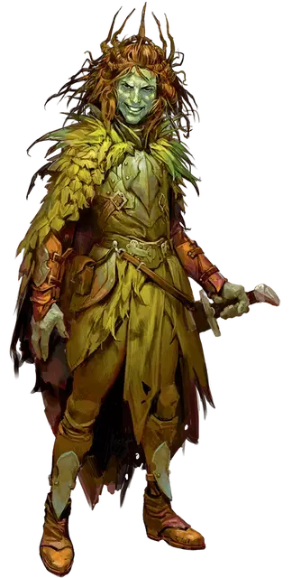

Весельчак-осквернитель
Smiler the Defiler
Средняя Фея (Эльф), хаотично-злая, именной НИП

Класс Доспеха 18 (кожаный доспех +2)
Хиты 165 (22к8 + 66)
Скорость 30 футов
| мод | спас | ||
|---|---|---|---|
| СИЛ | 14 | +2 | +2 |
| ЛОВ | 20 | +5 | +5 |
| ТЕЛ | 16 | +3 | +3 |
| мод | спас | ||
|---|---|---|---|
| ИНТ | 18 | +4 | +4 |
| МДР | 11 | +0 | +0 |
| ХАР | 18 | +4 | +4 |
Навыки Обман +7, Убеждение +7
Сопротивление урону дробящий, колющий, рубящий от немагических атак
Чувства тёмное зрение 60 футов, пассивное Восприятие 10
Языки Общий, Сильван, Эльфийский
Опасность 7 (2900 опыта)
Бонус мастерства +3
Особенности
Особое снаряжение. Весельчак облачён в кожаный доспех +2 и орудует коротким мечом +1.
Фейский шаг (перезарядка 4-6). Бонусным действием эладрин может телепортироваться на расстояние до 30 футов в свободное пространство, находящееся в его поле зрения.
Врождённое колдовство. Базовой характеристикой эладрина является Харизма (Сл спасброска от заклинания 15). Он может накладывать следующие заклинания, не нуждаясь в материальных компонентах:
• Неограниченно: очарование личности [charm person], Жуткий смех Таши [Tasha’s hideous laughter]
• 3/день каждое: смятение [confusion], речь златоуста [enthrall], внушение [suggestion]
• 1/день каждое: мираж [hallucinatory terrain], неудержимая пляска Отто [Otto’s irresistible dance]
Сопротивление магии. Эладрин совершает с преимуществом спасброски от заклинаний и прочих магических эффектов.
Действия
Мультиатака. Эладрин совершает две атаки оружием. Вместо одной из атак он может наложить заклинание.
Короткий меч +1. . Рукопашная атака оружием: +9 к попаданию, досягаемость 5 футов, одна цель. Попадание: 9 (1к6 + 6) колющего урона.
Описание
Этот искатель приключений — эладрин из Страны Фей — застрял на Авернусе, брошенный спутниками. Последние семьдесят лет он бродит по Авернусу, заключая с бестиями сделки, чтобы выжить. Весельчак в итоге продал свою душу исчадию ада, которое помогло ему свергнуть главаря банды, никалота по имени Яррасто. Весельчак подчинил банду никалота и забрал его дьявольские боевые машины. Его банда назвалась Осквернителями Весельчака, и их свирепость долго внушала ужас прочим бандам Авернуса.
Трое соперников Весельчака— Горькое Дыхание, Принцепс Ковик и Феонор — объединили силы и истребили Осквернителей. Сам Весельчак сбежал и теперь колесит по Авернусу на «Дьявольском гонщике» в поисках искателей приключений, которые помогли бы ему отомстить этим главарям банд. Его единственной союзницей остаётся Безумная Мэгги, но он не желает вступать в её шайку.
У Весельчака безумная улыбка, за которую он и заслужил прозвище. При виде персонажей он улыбнётся пошире и спрыгнет поприветствовать их.
Этому эладрину больше подошло бы прозвище Весельчак-заводила. Он постоянно пытается заразить собеседников своим неутомимым оптимизмом и шокирующей безбашенностью. Весельчак считает, что может многого добиться позитивным настроем и смертельно опасными трюками. Он признаёт, что его выходки могут погубить других, но верит, что может подчинить мультивселенную своим капризам, если очень постарается. Честно говоря, он просто чокнутый.
Одна из любимых выходок Весельчака—с помощью заклинания мираж [hallucinatory terrain] создать на Авернусе частичку Страны Фей: прекрасную лесную поляну, где он может отдохнуть несколько часов, размышляя и строя планы.